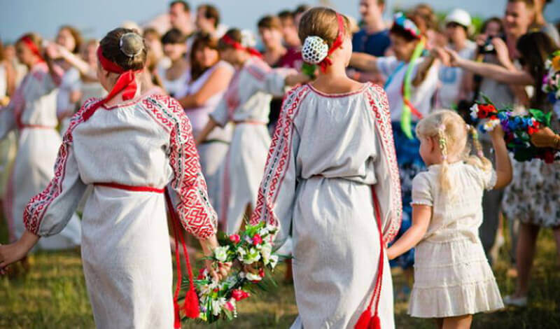
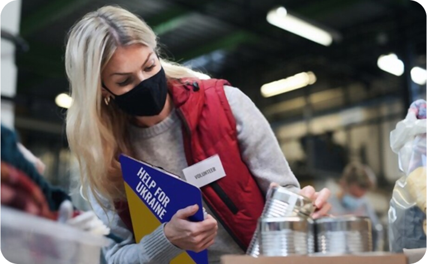
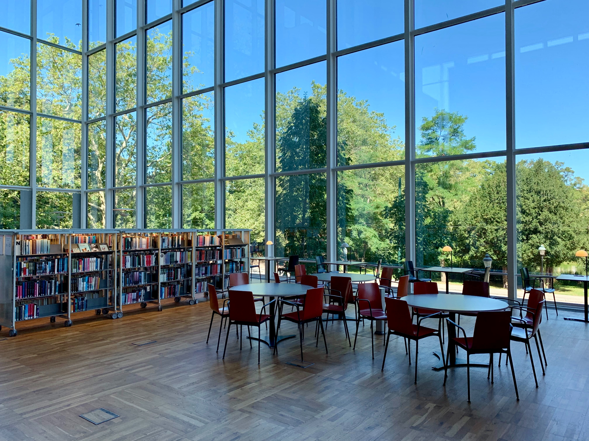
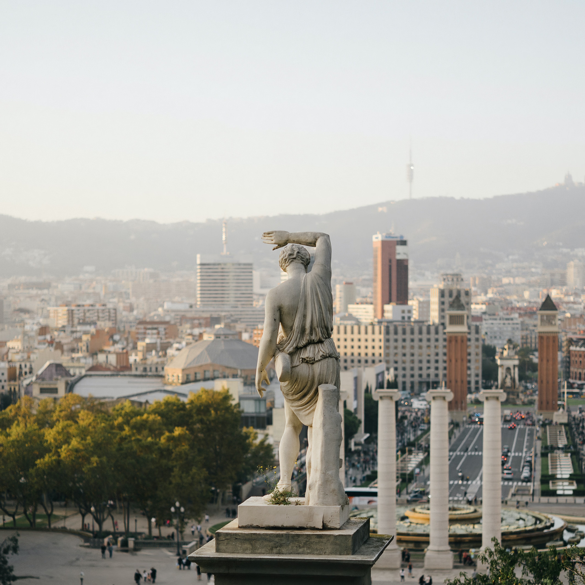
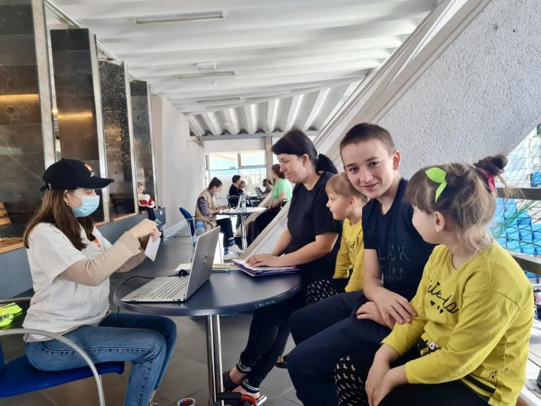

Хто ми та що робимо
Наша мета: сформувати позитивний імідж України як сучасної та привабливої європейської країни.
Наша місія: розвиток української діаспори в Іспанії задля зміцнення міжнародних зв'язків України та Іспанії.
Ольга Дзюбан заснувала Асоціацію «Джерело» у 2012 році задля допомоги українцям.
Українці, які опиняються в Іспанії та хочуть залишитись у цій країні, інтегруватись, мають великі потреби у юридичних консультаціях, психологічній підтримці, спілкуванні, теплій дружній атмосфері. Все це дає землякам «Джерело».
Друга по значенню ціль — показати культуру України, ділитись традиціями, створювати освітні та культурні проєкти, які роблять життя людей насиченим, цікавим та щасливим.
Основними цілями діяльності Асоціації є:
- Розвиток українських освітніх, культурних, соціальних та екологічних проєктів
- Організація заходів, спрямованих на обмін та взаємозбагачення українців з представниками інших культур
- Збереження українських культурних традицій
- Соціальна адаптація українців в Іспанії
- Промоція українських виробників та представників креативних індустрій
- Розвиток інституту волонтерства в Каталонії
- Збір гуманітарної допомоги для України та допомога українським біженцям. (з початку війни в Україні робота у цьому напрямку стала інтенсивнішою)



Асоціація «Джерело» у цифрах
Станом на 01.09.2022 Гуманітарним Центром Асоціації надано допомогу понад 1 тисячі українських сімей, які тимчасово переміщені в Іспанію внаслідок війни в Україні. Також Центром видано 1593 продуктових наборів. Асоціацією організовані курси іспанської мови, які регулярно відвідує 70 українських біженців. З жовтня заплановано відкриття курсів з вивчення іспанської мови для абітурієнтів, що вступатимуть до іспанських вишів.
Щодня послугами Гуманітарного центру Асоціації користуються всередньому 50 сімей
10 років
активної роботи в Іспанії
70+
культурних подій
понад 150 тонн
зібраної гуманітарної допомоги для України
40 000€
перераховано для допомоги Україні (ЗСУ, цивільне населення)
понад 100
волонтерів залучили до допомоги
3 освітніх проєкти
заснували у Барселоні
понад 2500
продуктових наборів
майже 100
людей відвідує курси
25 осіб
навчаються на курсах для абітурієнтів
Про наші плани на майбутнє розповідає засновниця Асоціації Ольга Дзюбан
Асоціація втілює у життя культурні, освітні, гуманітарні проєкти, залучаючи кошти меценатів та фондів, спираючись на підтримку небайдужих людей, створюючи коло однодумців. Ми надихаємо на створення нових сучасних проєктів, які спрямовані на популяризацію та розвиток української культури та мистецтва. Звітуємо перед членами та меценатами, залучаємо нових партнерів, маємо великі плани. За сутністю асоціація «Джерело» е організацією парасолькового типу.
Нашi проекти

Українська школа та садочок “Нове покоління”

Український сквер на горі Монжуїк
Гуманітарний Центр допомоги Україні

Українська бібліотека у Барселоні
Щорічний фестиваль української культури “Ucrania Fest”

Український Центр у Барселоні

Веб сайт допомоги українським біженцям HelpUA.esp
Асоціація активно проводить такі заходи:
- Фестиваль «Вишиванка як код нації» (Людмила Скитенко, «Академія успіху»)
- Допомога учасникам (пораненим) подій на Майдані (Революція гідності)
- Матеріальна та грошова допомога воїнам АТО та ЗСУ, пораненим у війні, реабілітація в Барселоні
- Матеріальна допомога дітям-сиротам у дитячих будинках в Україні
- Вечорниці
- Зустрічі з сучасними українськими письменниками та презентації їх творів
- Фотовиставки та виставки картин українських художників
- Юридичні семінари за участю висококваліфікованих спеціалістів
- Концерти відомих українських співаків та танцювальних колективів
- участь у місцевих фестивалях міста Барселони (Merce, Festival «Sopas del Mundo»)
Члени Асоціації можуть:
- Навчати дітей у школі «Нове покоління»
- Займатися на мовних курсах, користуватися бібліотекою
- Відвідувати освітні заходи
- Брати участь та організовувати культурні, мистецьки події
- Отримувати юридичні консультації та допомогу, а також консультації психолога
Щоб стати членом асоціації треба мати бажання, зв’язатись із нами, пройти невеличку співбесіду, сплатити членські внески. Можна заповнити форму прямо тут на сайті, ми зв’яжемось з вами.
Ласкаво просимо до нашої великої сім’ї, зараз в асоціації понад 1000 членів.